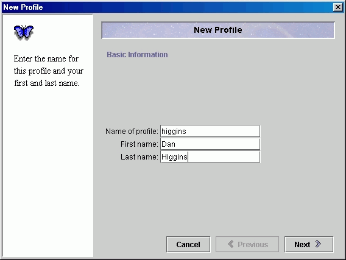

Morpho
User Guide
|
Morpho
User Guide
|
||||||
| KNB Home | Data | People | Informatics | Biocomplexity | Education | Software | |
| Getting Started |
|
If you are working only locally, any Username (like 'higgins') can be entered.  Startup Profile Screen When the 'Finish' button is clicked, a Connection Dialog will appear, as illustrated below. This dialog will appear at the beginning of all subsequent Morpho session. It allows you to login to the central KNB server if you have an account on that server. If you do not have an account, you can just click the Cancel button. Note that you do not need to 'Connect' to search the central catalog, but you do need to 'Connect' to edit or submit data.
Connection Dialog |